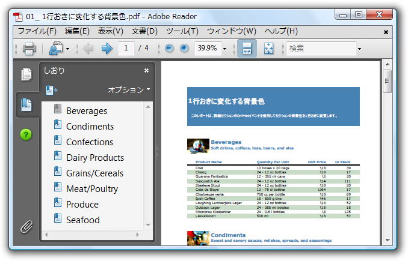

全て展開
全て展開 すべて折りたたむ
すべて折りたたむAdobe Reader アプリケーションを使用して PDF ドキュメントを開くと、大部分の長いドキュメントではリーダーの左ペインにアウトライン構造が表示されることがわかります。このアウトラインにより、ドキュメントの構造全体を見渡して容易に特定のトピックを検索できます。以下の図は、アウトラインを持つ PDF ドキュメントの例を示しています。

アウトラインのエントリはブックマークと呼ばれ、AddBookmark メソッドを使用して C1Pdf ドキュメントに追加できます。AddBookmark メソッドは３つの引数を取ります。すなわち、アウトラインエントリのタイトル、アウトラインレベル、および現在のページ上のエントリの y 位置（ページの上部からポイントで測定）です。
たとえば以下のルーチンでは段落をドキュメントに追加し、さらにその段落をレベル０のアウトラインエントリとしてマークします。
Visual Basic コードの書き方
| Visual Basic |
コードのコピー
|
|---|---|
Private Function RenderParagraph(text As String, font As Font, rect As RectangleF, rectPage As RectangleF, outline As Boolean) As RectangleF
' このページに収まらない場合、ページを改行します。
rect.Height = C1PdfDocument1.MeasureString(text, font, rect.Width).Height
If rect.Bottom > rectPage.Bottom Then
C1PdfDocument1.NewPage()
rect.Y = rectPage.Top
End If
' テキストを描画します。
C1PdfDocument1.DrawString(text, font, Brushes.Black, rect)
' アウトラインに見出しを追加します。
If outline Then
C1PdfDocument1.DrawLine(Pens.Black, rect.X, rect.Y, rect.Right, rect.Y)
C1PdfDocument1.AddBookmark(text, 0, rect.Y)
End If
' 次回の四角形を更新します。
rect.Offset(0, rect.Height)
Return rect
End Function
|
|
C# コードの書き方
| C# |
コードのコピー
|
|---|---|
private RectangleF RenderParagraph(string text, Font font, RectangleF rect, RectangleF rectPage, bool outline)
{
// このページに収まらない場合、ページを改行します。
rect.Height = c1PdfDocument1.MeasureString(text, font, rect.Width).Height;
if (rect.Bottom > rectPage.Bottom)
{
c1PdfDocument1.NewPage();
rect.Y = rectPage.Top;
}
// テキストを描画します。
c1PdfDocument1.DrawString(text, font, Brushes.Black, rect);
// アウトラインに見出しを追加します。
if (outline)
{
c1PdfDocument1.DrawLine(Pens.Black, rect.X, rect.Y, rect.Right, rect.Y);
c1PdfDocument1.AddBookmark(text, 0, rect.Y);
}
// 次回の四角形を更新します。
rect.Offset(0, rect.Height);
|
|
 |
メモ：ブックマークの子は初期化のとき表示されるかどうかを指定するためのブール値やドキュメントのターゲット名を渡すには、AddBookmark()メソッドに対して上記に記載したの他も2つのオーバーロードを使用できます。 |